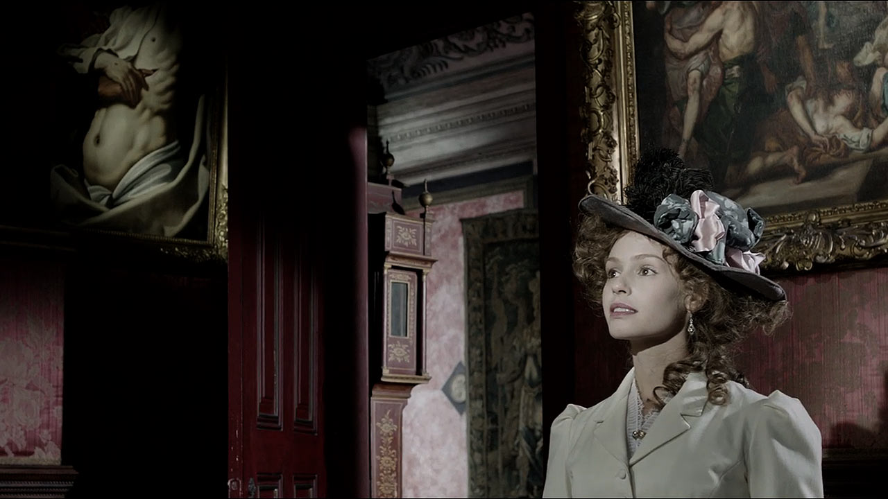

Resumos
Nesta página estão resumos da obra "Os Maias". Estes resumos são simples e objetivos, não são muito detalhados mas a informação que passam com certeza é interessante e podem até despertar o teu desejo de ler o livro, quem sabe? Ou se já chegaste a ler, podes rever algumas informações para relembrar o que foi lido! Diverte-te a ler! :)
Capítulo I e II
Entre o primeiro e segundo capítulo, nos deparamos já com imensas situações, nomeadamente a venda de propriedades e a remodelação do Ramalhete por Carlos Eduardo. Carlos conclui o seu curso de medicina em Coimbra e faz uma viagem pela Europa em 1875. No outono deste mesmo ano, Afonso deixa Sta. Olávia e instala-se no Ramalhete.
Capítulo III
A infância de Carlos é passada em Santa Olávia e é descrito um episódio onde se dá uma visita de Vilaça à quinta. Descreve-se a educação liberal de Carlos, com um professor Inglês que dã primazia ao exercício físico e às regras duras que Afonso impõe ao neto. É sobretudo um capítulo de contraste entre as educações tradicional (Eusebiozinho) e à inglesa (Carlos). Vilaça dá notícias de Maria Monforte e de sua filha a Afonso, e segundo ele a sua neta morrera em Londres. Alguns anos depois Carlos faz exame triunfal de candidatura à universidade.
Capítulo IV
Carlos descobre a sua vocação para Medicina e matriculou-se na Universidade de Coimbra. É sobretudo chegado a João da Ega, que estudava direito e era sobrinho de André da Ega, amigo de infância de Afonso. Ao fim desse tempo, Afonso esperava-o no Ramalhete, onde se iriam instalar (fim da grande analepse). Carlos tencionava montar um consultório e um laboratório em Lisboa, vontades que depressa satisfez com a ajuda do avô: o laboratório foi montado num velho armazém, e o consultório num primeiro andar em pleno Rossio. Carlos recebeu com alegria a visita do seu amigo Ega, que lhe anunciou que ia publicar o livro que andava a escrever havia já alguns anos – “Memórias de um Átomo” – que todos os que tinham ouvido falar esperavam com impaciência.
Capítulo V
Ega estava apaixonado por Raquel Cohen, que era, infelizmente, casada. Durante uma conversa entre Carlos e Ega, Ega propõe a Carlos conhecer a família Gouvarinho. Carlos aceita. Após a um encontro com estes amigos de Ega, Carlos não parava de pensar na Condessa Gouvarinho. Estava apaixonado. Este capítulo acaba com uma ida de Carlos com a família Gouvarinho à ópera, e durante esta ocasião, a condessa mostra-se interessada em Carlos.
Capítulo VI
Ega convida-se para jantar com Carlos e quando se prepara para sair, falam sobre a Gouvarinho e sobre o súbito desinteresse de Carlos pela senhora, após uma grande atracção. Esta atitude de Carlos para com as mulheres, era frequente e os dois conversam sobre o assunto. Na ida para o jantar, cruzam-se com Craft, amigo de Ega. Ega apresenta Carlos ao amigo. Ega faz questão que os dois amigos se conheçam melhor. Após alguns contratempos, Ega consegue marcar o jantar no Hotel Central com Carlos, Craft, Alencar, Dâmaso e Cohen. O jantar acaba e Alencar acompanha Carlos a casa, lamentando-se da vida, do abandono por parte dos amigos e falando-lhe de seu pai, de sua mãe e do passado. Carlos recorda como soubera a história dos seus pais : a mãe fugira com um estrangeiro levando a irmã, que morrera depois, o pai suicidara-se. Carlos, já em casa, antes de adormecer e enquanto aguarda um chá, sonha com a mulher deslumbrante, uma deusa, com quem se cruzou à porta do Hotel Central, enquanto aguardava com Craft os restantes amigos para o jantar.
Capítulo VII e VIII
A condessa Gouvarinho, com a desculpa que a filha se encontrava doente, procura Carlos no consultório. Carlos convida Cruges a ir a Sintra no dia seguinte, pois tomara conhecimento, por intermédio de Taveira, que Maria Eduarda aí se encontrava na companhia de seu marido e de Dâmaso. Carlos da Maia e Cruges, vão visitar Sintra. A ideia é de Carlos que obriga Cruges a ir com ele. Esta viagem tem o propósito escondido por Carlos, de procurar um encontro fortuito coma Sra. Castro Gomes, que ele julgava em Sintra. Carlos já informado sobre o destino dos Castro Gomes, que haviam deixado Sintra na véspera, e Carlos decide voltar para Lisboa.
Capítulo IX e X
Já no Ramalhete, no final da semana, Carlos recebe uma carta a convidá-lo a jantar no Sábado seguinte nos Gouvarinhos.
Dâmaso aparece de repente, pedindo a Carlos para ver um doente "daquela gente brasileira", os Castro Gomes - a Rosa.
Os pais tinham partido essa manhã para Queluz. Ao chegar ao Hotel, Carlos verifica que a pequena já estava óptima.
Carlos dá uma receita a Miss Sara, a governanta. Carlos vai progressivamente ficando íntimo dos condes de Gouvarinho.
Visita a Gouvarinho e dá-lhe um tremendo beijo, mesmo antes da chegada do conde Gouvarinho.
Passam-se 3 semanas. Carlos já estava farto da Gouvarinho e dos seus encontros às escondidas, e quer ver-se livre
dela. Combina com o Dâmaso, no Ramalhete, levar os Castro Gomes aos Olivais, mas isto não se concretiza a ideia pois
o sr. Castro Gomes partira para o Brasil em negócios. Chega o dia das corridas de cavalos. Anda tudo á briga, num
rebuliço total! Lá nas corridas, encontra a Gouvarinho, que lhe propõe irem de comboio ate Santarém, uma vez que ela
ia para o Porto (pois o seu pai estava mal), e dormiam no hotel em Santarém, e daí cada um seguia para o seu lado.
Depois, fazem-se apostas; todos apostam em Minhoto, mas Carlos aposta em Vladimiro, que vence e Carlos ganha 12 libras,
facto muito comentado. Encontra Dâmaso, que lhe informa que o Castro Gomes afinal tinha ido para o Brasil e deixara a
mulher só por uns 3 meses. Discute com a Gouvarinho, mas acaba por aceder ao desejo do encontro em Santarém, mas agora
apenas consegue pensar na mulher de Castro Gomes. Ao descobrir que ela vivia no prédio de Cruges, pois alugara a casa á
mãe do Cruges, proprietária do prédio, Carlos vai à R. de S. Francisco com o pretexto de visitar o Cruges, mas ele não
estava. Volta para o Ramalhete e lá descobre que tinha uma carta da Castro Gomes pedindo-lhe que a visite no dia seguinte,
por ter "uma pessoa de família, que se achava incomodada".

Capítulo XI, XII e XIII
Carlos vai visitar a Sra. Castro Gomes, e descobre o seu nome, Maria Eduarda. É a governanta, Miss Sara, que
estava doente - tinha uma bronquite. Carlos conversa com Maria Eduarda, passa-lhe a receita e diz-lhe os cuidados
que deve ter com Sara, dizendo que terá de observá-la diariamente. Nessa noite Carlos iria ter com a Sra. Gouvarinho
para a fantástica noite em Santarém, mas Carlos começava a repudiá-la, a odiá-la. Por sorte, o Gouvarinho decidiu à
última da hora ir com a mulher para o Porto, o que convém muito a Carlos, assim como a morte de um tio de Dâmaso em
Penafiel, deixando-lhes os "entraves" fora de Lisboa. Nas semanas seguintes, Carlos vai-se familiarizando com Maria
Eduarda, graças à doença de Miss Sara. Falam ambos das suas vidas e dos seus conhecidos. Dâmaso volta de Penafiel e
vai visitar Maria Eduarda. Ao chegar lá vê Carlos com "Niniche" (a cadela de Maria) ao colo, que lhe rosna e ladra -
Dâmaso fica zangado e cheio de ciúmes.
O conde Gouvarinho convidou-os para jantar na próxima 2ª feira. Depois, nesse jantar, a Gouvarinho zangada com Carlos
e com ciúmes da sua proximidade com Maria Eduarda, passa o tempo a mandar-lhe indirectas. Na 3ª feira, depois de um
encontro escaldante com a Gouvarinho na casa da sua titi, Carlos chega atrasado à casa de Maria Eduarda". No meio da
conversa, Domingos anuncia Dâmaso e Maria Eduarda recusa-se a recebê-lo - Dâmaso fica furioso. Maria fala a Carlos sobre
uma possível mudança de casa (e ele pensa logo na casa do Craft, decidindo comprá-la para ela). Carlos deixa escapar
que a "adora" depois de uma troca de olhares, beijam-se. Na 4ª feira, Carlos conclui o negócio da casa com o Craft. Ega,
mostra-se insultado pelo segredo que Carlos faz de tudo, mas este acaba por lhe contar que se apaixonou e envolveu com
Maria Eduarda.
Ega informa a Carlos de que Dâmaso anda a difamá-lo a ele e a Maria Eduarda. Carlos fica furioso, querendo matá-lo e
ao encontrá-lo na rua, ameaça-o. No sábado, Maria Eduarda visita a sua nova casa nos Olivais. Depois da visita e do
almoço, Carlos e Maria Eduarda envolvem-se. Descobre-se que Dâmaso estava a namorar a Cohen. Depois a Gouvarinho
aparece querendo falar com Carlos - acabam por discutir sobre a ausência de Carlos e depois terminam tudo.
Capítulo XIV
Afonso parte para Sta. Olávia e Carlos fica sozinho no Ramalhete, pois Ega parte para Sintra (e curiosamente os
Cohen também). Maria Eduarda instala-se nos Olivais, e Carlos passa a frequentar a casa todos os dias, e eles pretendem
fugir até Outubro para Itália e casar lá, mas Carlos pensa no desgosto que dará ao avô (porém a sua felicidade supera).
Chega Setembro. Craft, regressado de Sta. Olávia para o Hotel Central, diz a Carlos que pareceu-lhe estar o avô
desgostoso por Carlos não ter aparecido por lá. Então, Carlos decide ir visitar Afonso, mas antes leva Maria a
visitar o Ramalhete (e Maria Eduarda refere que às vezes Carlos faz-lhe lembrar a sua mãe e conta-lhe a sua história -
a mãe era da ilha da Madeira que casara com um austríaco e que tinha tido uma irmãzinha, que morrera em pequena).
Uma semana depois Carlos regressa de Sta Olávia e fala com Ega que voltara de Sintra. Nessa noite, Castro Gomes
aparece no Ramalhete, com uma carta anónima que lhe tinham mandado para o Brasil, dizendo que a sua mulher tinha um
amante, Carlos da Maia. Carlos fica estupefacto, e acaba por perceber que era a letra de Dâmaso. Depois, Castro Gomes
conta-lhe que não é marido de Maria Eduarda, nem pai de Rosa, e que apenas vivia amigado com ela. Diz-lhe também que
se vai embora, e que Maria Eduarda se chama Madame Mac Gren. Furioso pela mentira de Maria, Carlos decide ir
confrontá-la. Ao entrar, sabe por Melanie, a criada, que o Castro Gomes já lá tinha estado. Maria Eduarda, a chorar,
pede perdão a Carlos de não lho ter contado, pois tinha medo que ele a abandonasse, e conta então a verdadeira história
da sua vida. Depois de uma grande cena de choro, Carlos pede-a em casamento.
Capítulo XV e XVI
Dias depois, Carlos conta tudo o que se passara a Ega que lhe diz que seria melhor esperar que o avô morresse
para então se casar, pois Afonso estava velho e débil e não aguentaria o desgosto. Afonso regressa de Sta. Olávia,
Carlos abandona a casa que alugara perto dos Olivais e Maria Eduarda volta para o apartamento da mãe de Cruges na
Rua de S. Francisco, deixando a Toca.
Carlos e Ega vão ao sarau da Trindade ouvir o Cruges e o Alencar, que nessa noite vão lá estar. Ega conhece Mr.
Guimarães, o tio de Dâmaso que vivia em Paris e trabalhava no jornal, que lhe viera pedir explicações sobre a carta
que Dâmaso escrevera, que lhe disse ter sido Ega a obrigá-lo a fazer. Ega e Guimarães acabam por resolver tudo e
ficam amigos. Mais tarde, quando Ega se ia embora, Guimarães aparece dizendo lhe que tem um cofre da mãe de Carlos
para entregar à família, que esta lhe tinha pedido antes de morrer. No meio da conversa, Ega descobre que Carlos
tem uma irmã, e Guimarães diz tê-los visto aos três numa carruagem: Carlos, Ega e a irmã, Maria Eduarda. Depois,
Guimarães conta a Ega o passado de M.ª Monforte inclusive a mentira que ela dissera a Maria Eduarda sobre o seu pai,
e diz que Maria é filha de Pedro da Maia, pois ele era amigo da família e nessa atura já os visitava. Fala também da
fuga da Monforte com Tancredo, da filha que eles tiveram e morreu em Londres, e depois, da vida de Maria Eduarda no
convento, que ele próprio a visitara. Guimarães entrega o cofre a Ega, que chocado com a verdade, decide pedir ajuda a
Vilaça para contar tudo a Carlos.
Capítulo XVII
Ega procura Vilaça e conta-lhe tudo. Juntos, abrem o cofre da Monforte e acham lá uma carta dela para Maria
Eduarda onde diz toda a verdade: ela é filha de Pedro da Maia. No dia seguinte, Vilaça e Ega contam a verdade a
Carlos, que não acredita no que lhe contam, e aflito, procura o avô e conta-lhe tudo, com esperança que este lhe
desminta a história. Mas Afonso acaba por confirmar, e em segredo diz a Ega que sabe que Carlos tem um caso com
Maria Eduarda. Apesar de já saber a verdade, nessa noite Carlos vai ter com Maria Eduarda; primeiro pensara em
dizer-lhe tudo e depois fugir para Sta. Olávia, mas depois, incapaz, acaba por deixar-se levar por ela e ali ficar.
Continuava a ama-la, e o facto de serem irmão não mudava o que ele sentia. Afonso da Maia sabe que Carlos continua
a encontrar-se com Maria Eduarda, e fica desolado. Ega furioso com o comportamento de Carlos, confronta-o e ele
decide partir no dia seguinte para os Olivais. No dia seguinte, Baptista (o seu criado) chama-o, dizendo a Carlos
que o avô estava desmaiado no jardim. Carlos corre lá vê o avô estava morto Carlos culpa-se a si mesmo da morte do
avô, pois achava que era pelo avô saber tudo que tinha morrido. Ega escreve um bilhete a informar Maria Eduarda do
facto. Carlos parte para Sta. Olávia, pedindo a Ega para ir falar com Maria Eduarda e lhe contar tudo e dizer-lhe
que parta para Paris, levando 500 libras. Ega fala com Maria Eduarda, que parte no dia seguinte para Paris, para
sempre.

Capítulo XVIII
Passam-se semanas. Sai na "Gazeta Ilustrada" a notícia da partida de Carlos e Ega numa longa viagem pelo mundo.
Um ano e meio depois Ega regressa trazendo consigo a ideia de escrever um livro e contando que Carlos ficara em Paris,
onde alugara um apartamento, pois não queria mais lembrar a Portugal No Ramalhete, a maior parte das decorações (tapetes,
faianças, estátuas) já tinham ou estavam a ser despachadas para Paris, onde Carlos vivia agora, e que lá se guardavam os
móveis e outros objectos trazidos da Toca. Carlos relembra Maria Eduarda e conta a Ega que recebera uma carta dela. Ia casar
com um tal de Mr. de Trelain, decisão tomada ao fim de muitos anos, e que tinha comprado uma quinta em Orleães. Carlos encara
este casamento de Maria Eduarda como um final, uma conclusão da sua história, era como se ela morresse, como se a Maria Eduarda
deixasse de existir e passasse apenas a haver a Madame de Trelain. Ega e Carlos dizem que não vale a pena viver, pois a vida é
uma treta. Por mais que tentemos lutar para mudá-la, não vale a pena o esforço, porque tudo são desilusões e poeira.